说明：Zeus多级路由使用指南
一、解决问题
- 提升性能
- 上海业务安全在内容安全维度，存在大量的消耗资源的规则（例如OCR识别算法），业务上为了提高性能，期望优先执行资源消耗低的规则服务，在执行其他高消耗的规则；
-
支付风控业务，在某些场景中的规则量高达一千多条，任何数据需要并行过规则，为了进一步提高性能，业务期望当数据进入规则平台，命中某些高优先的决策规则，则停止执行后续规则（例如，业务数据命中加黑账号的规则后，无需继续执行后续策略直接拦截账号操作）
-
复杂路由策略（决策流）
-
消费金融在处理复杂业务的过程中，会涉及到策略分层的概念进行分流，例如付费的执行哪些规则、免费的执行哪些规则；
-
-
多级路由示例
二、名词说明
- 普通场景：一堆规则的集合，无需按照逻辑进行分流，当前执行完成就完成
- 普通路由场景：仅可支持两层，即总-分
- 多级路由场景：可支持多层，决策流模式，即一堆规则的集合，支持按照逻辑进行分流，满足指定条件可以指定走向在每个节点进行条件设置，实现最终流向；
三、操作说明
-
Zeus-美团
所使用的系统为https://zeus.sankuai.com/（Zeus-美团）参考如下流程：
Step1:创建路由场景、规则、场景
关于如何创建规则或者场景，这里不再赘述，请参考Zeus规则平台管理系统使用指南、说明：创建/修改场景、说明：创建/修改规则（废弃）
入口：
a.在场景模块中创建路由场景
b.http://zeus.mis.rc.test.sankuai.com/data_zeus_static/#/routerSceneList
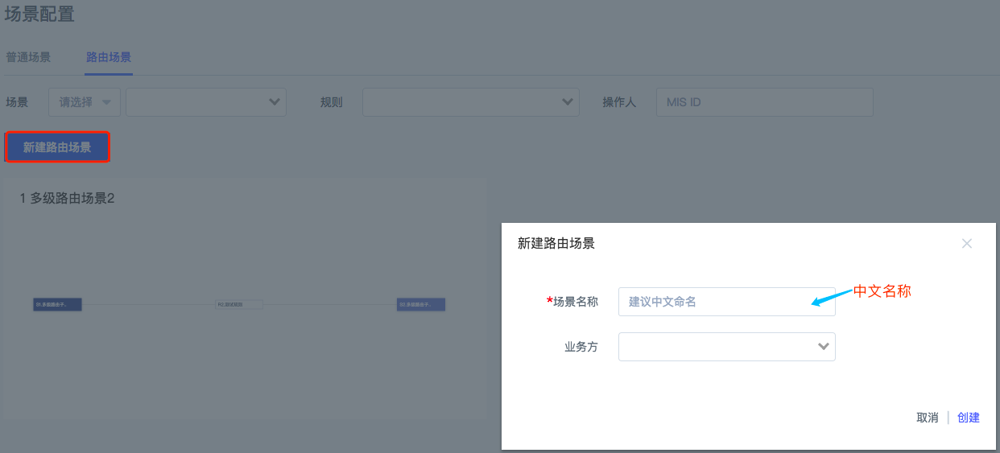
Step2:多级路由场景配置
（1）入口：http://zeus.mis.rc.test.sankuai.com/data_zeus_static/#/routerSceneList
（2）默认初始化节点设置：支持普通场景作为根节点，支持规则在该场景下配置
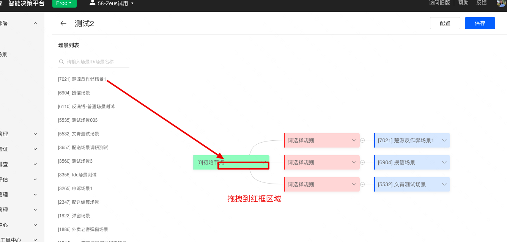
鼠标的小手手 进入红框！！！！
（3）增加下一节点和路由规则
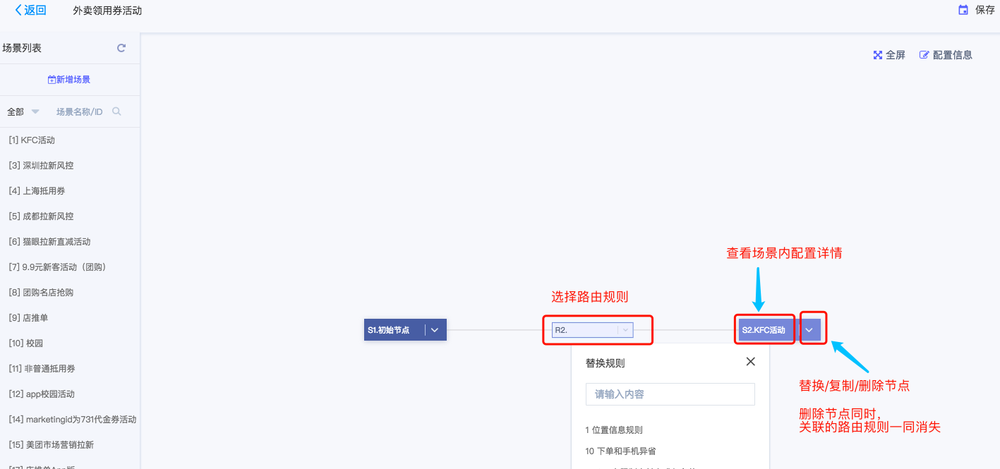
（4）查看下一节点的场景内配置详情

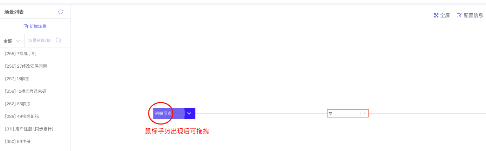
（5）完成配置点击保存
Step3:查看全量多级路由场景
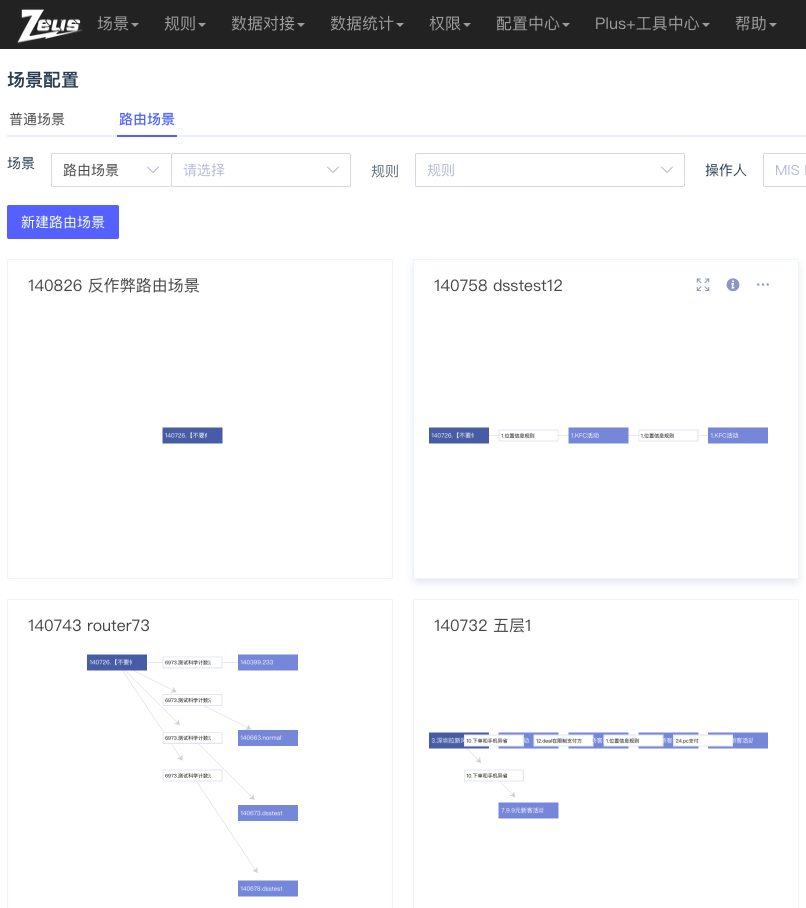
-
Zeus-私有化
所使用的系统为Zeus-美团私有化 参考如下流程：（不知道私有化是什么，那就不需要看以下流程了）
Step1:创建规则/场景
关于如何创建规则或者场景，这里不再赘述，请参考Zeus规则平台管理系统使用指南
Step2:添加/更新多级路由场景
关键概念说明：
场景：多级路由的节点，场景是一组规则的集合
触发规则：当前仅当触发规则为“真”时，下一节点的场景才会被执行
（1）默认初始化节点设置：支持普通场景作为根节点，支持规则在该场景下配置
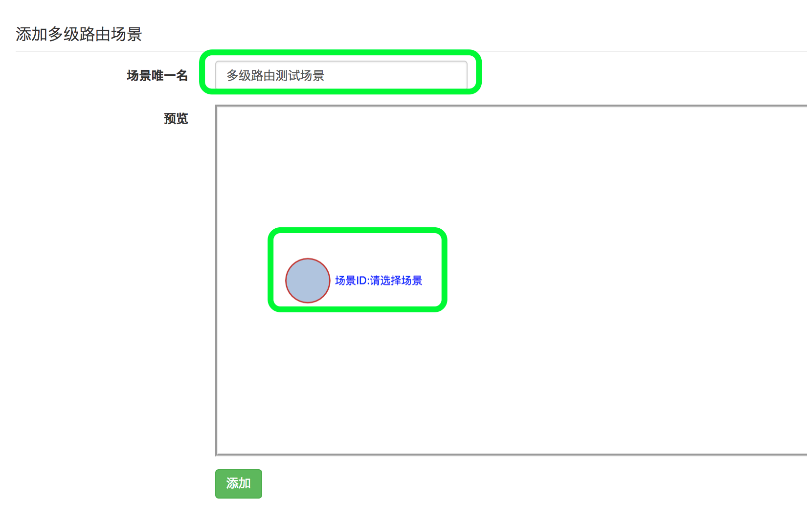
（2）增加下一节点和路由规则
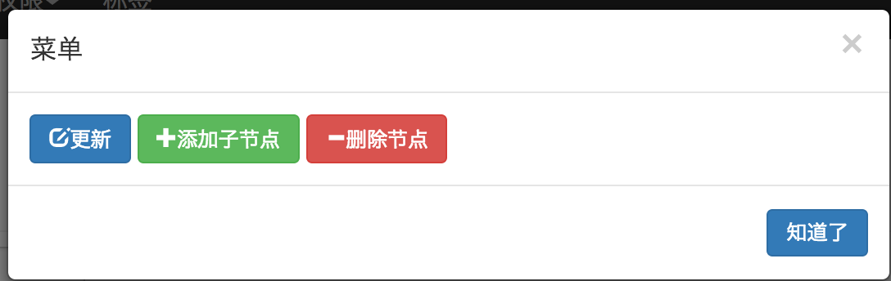
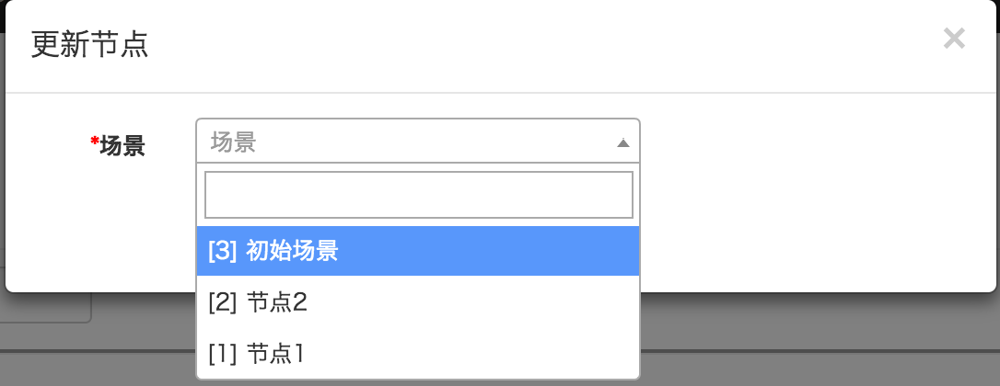
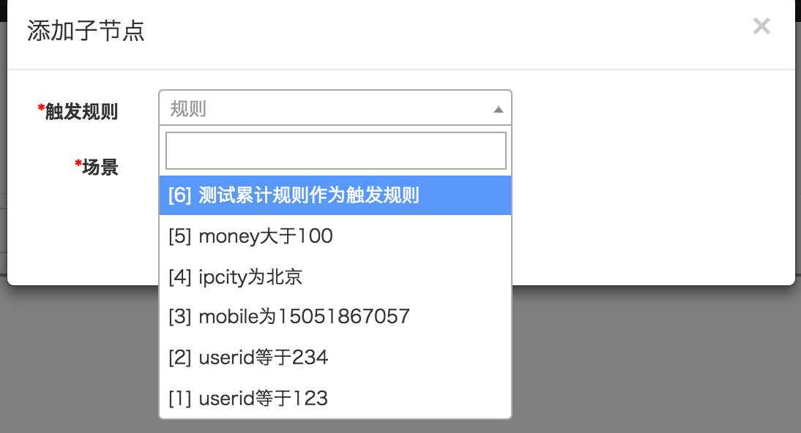
（3）完成配置点击保存
Step3:查看全量多级路由场景
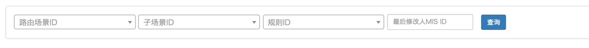
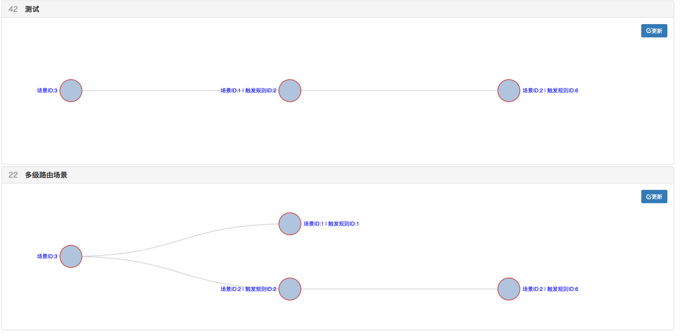
四、FAQ
Q1：如何配置“父场景未命中任何一个决策时才执行下一场景”？
A：Zeus内置了parentDecisionIds字段，该字段表示父场景命中了哪些决策。parentDecisionIds是一个以英文逗号列表，举例： parentDecisionIds = "101,102" ，表示父场景命中了101和102两个决策。
注意：父场景指的是该条路由规则在路由场景中的上一层级场景，而非根场景。如图中路由规则2342887，使用到parentDecisionIds，指的便是12969场景中的决策命中情况。
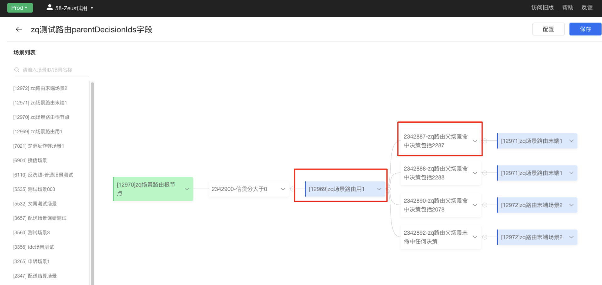
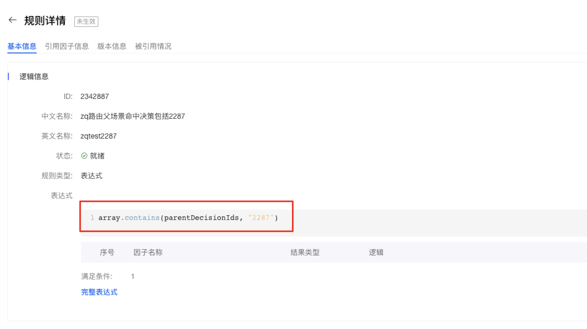
使用该字段的流程：
一、在Zeus平台中注册该参数，参数实例如下
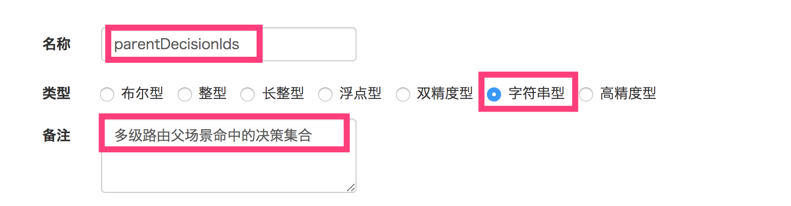
二、配置路由规则，参考如下：
//父场景未命中任何一个决策
parentDecisionIds == ""
//父场景命中了101决策
array.contains(parentDecisionIds, "101")Q2：在场景列表/场景配置列表中出现“【不要修改】自动同步的多级路由的公用根节点”是什么意思？
A：出现该信息是您所在的业务方下有使用路由场景才会出现，若未使用路由场景但出现此信息请联系值班Zeus。
该信息为系统自动生成信息，支持业务方将已经使用的普通路由修改为多级路由。无任何实际意义，仅仅为多级路由的根节点
普通路由和多级路由区别：普通路由仅支持两层；多级路由支持多层，最大不能超过5层；单层不建议超过10个以上场景 说明：普通路由场景使用文档、说明：Zeus多级路由使用指南
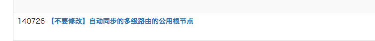
Q3：怎么查看多级路由的命中情况？
A：在实时日志查询中查看，查看详情是每一个节点（场景）为一条日志信息，目前不支持整体的路由场景信息查看。例如：
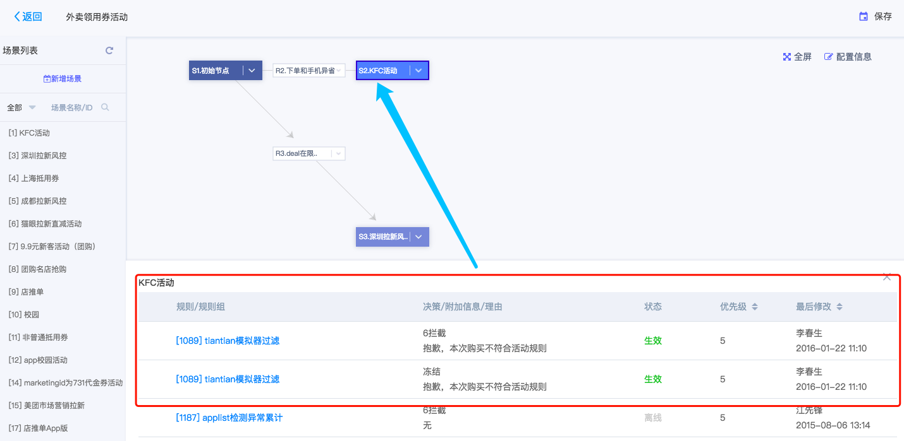
上图多级路由可查看的日志信息为：
初始节点场景配置日志、KFC活动场景配置日志、深证拉新风控场景配置日志，但不能查看外卖领用券活动场景配置日志；
Q4：为什么多级路由场景与场景间的路由规则不支持标记功能？
A：当前为多级路由一期项目，场景内规则支持标记状态，场景与场景间路由规则不支持标记功能，预计Q1～Q2可支持标记功能；
Q5：修改多级路由map图、路由规则以及内部使用的因子对整体影响怎么控制？
A：目前无测试的情况，修改即生效；预计2019Q4低提供策略修改的演练模式，用于修改的整体评估；预计2020Q1～Q2支持标记功能，用于新增场景的分支流向验证；
Q6：如何将已经使用的普通路由修改为多级路由？
Q7：多级路由返回的数据是什么？
A：将命中的场景及场景下的规则均返回。业务怎样确定哪个场景是最终的场景
（1）通过配置只有在最终场景才会出现的决策，进行标示
（2）预计2020年6月底，会增加返回多级路由的执行map和最终场景标识，便于业务从最终场景获取决策